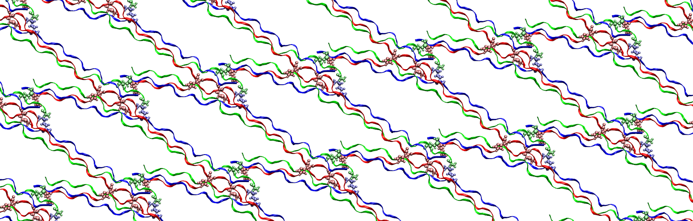
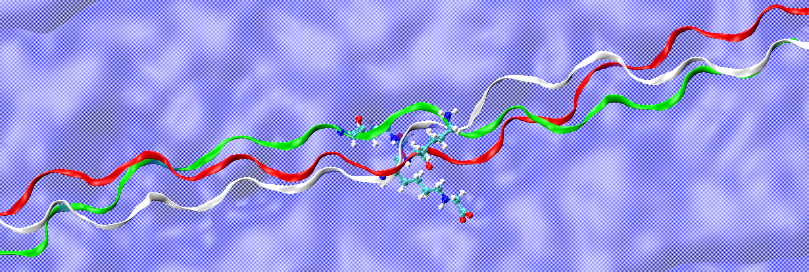
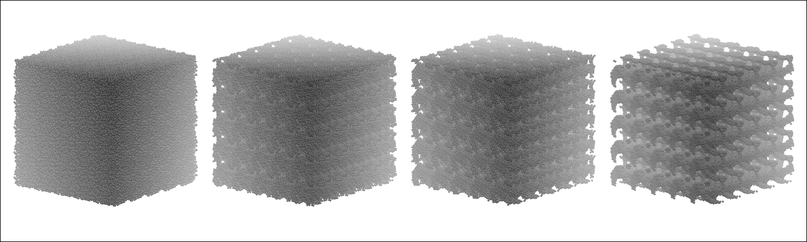
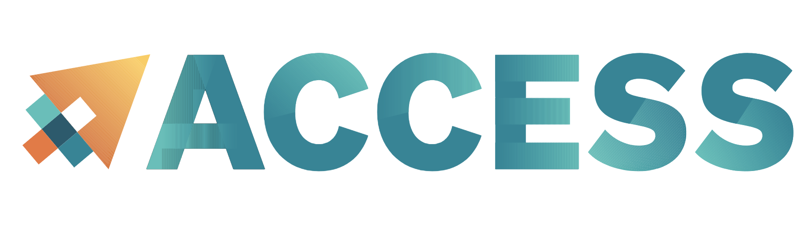
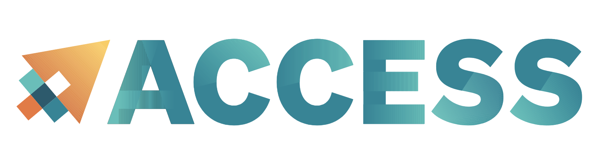

Our group’s research focuses on advancing molecular, multiscale and data-driven modeling methods to study the structure, function and mechanics of complex nanoscale and biological materials. In particular, our work aims to characterize extracellular matrix proteins including elastin, collagen and fibrillin, and their role in the context of aging and human disease. We are also interested in developing computational methods for the multiscale design and characterization of novel functional materials from the nanoscale, for medical and engineering applications, drawing inspiration from natural design principles. We employ a computational materials science approach, seeking to expose disease mechanisms from a fundamental scale, and across structural and functional hierarchies associated with complex biological systems. To this end, we apply a particle dynamics-based multiscale approach that integrates the structure-function paradigm of materials science and provides a bottom-up description of materials starting with the architecture of molecular building blocks at the atomistic level up to the macroscale. Our research also broadly utilizes novel data-driven, high-throughput machine learning-based approaches for predictive design. These tools enable us to pose essential questions about the behavior of tissues such as arterial elastic tissue and bone, and to repurpose molecules for new functions like improved immunogenicity, thermal stability or resilience in aging. The long-term vision of our group is to develop new bioengineering frameworks to investigate and understand the etiology and treatment of disease, and to establish broadly applicable frameworks for predictive materials design.
Thank you to our sponsors:

 
